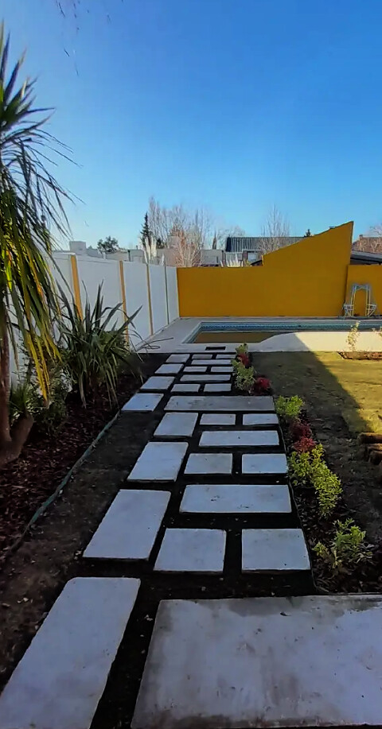

Define el uso
Organiza recorridos, permanencias y encuentros, mejorando el funcionamiento del proyecto.

Neuquén · Patagonia
Adaptada al contexto y a las necesidades de cada lugar.
Somos POA
¿Por qué el paisaje importa?
Organiza recorridos, permanencias y encuentros, mejorando el funcionamiento del proyecto.
Aporta soluciones técnicas, ambientales y funcionales que la arquitectura por sí sola no resuelve.
Refleja el carácter del lugar y aporta valor estético y cultural al proyecto.
El paisaje cambia, crece y se transforma. Diseñamos para acompañar ese proceso.
Mejora la calidad ambiental, genera diferenciación y aumenta el valor percibido del desarrollo.
El paisaje no representa un costo adicional del proyecto; representa una oportunidad para potenciarlo.
Cuando forma parte del proyecto desde el inicio, contribuye a construir lugares más funcionales, con mayor identidad, mejor experiencia de uso y un mayor valor percibido.
Quiénes somos
Diseño y ejecución de espacios verdes para ser vividos.
Lic. en Paisajismo
Ing. Agrónoma
¿Qué puede aportar POA?
Diseñamos propuestas que integran paisaje, arquitectura, usos y contexto.
Desarrollamos la documentación técnica necesaria para la correcta ejecución del proyecto.
Materializamos el proyecto con gestión y control para asegurar la calidad y el cumplimiento de lo diseñado.
Diseñamos e instalamos sistemas de riego eficientes y sustentables, adaptados a cada proyecto.
Selección y provisión de vegetación adecuada al contexto y a cada etapa de crecimiento del paisaje.
Acompañamos a desarrolladoras, empresas y equipos profesionales en la planificación de espacios exteriores y paisajismo integral.
¿Dónde podemos aportar?
Cómo trabajamos
Comprensión del lugar, el contexto, los usos y las necesidades del proyecto.
Desarrollo de la propuesta integrando paisaje, arquitectura, funcionalidad y contexto.
Elaboración de la información necesaria para comunicar y desarrollar el proyecto según su escala y complejidad.
Cómputos, presupuesto, organización de etapas y coordinación para su ejecución.
Ejecución y dirección de obra, asegurando que el proyecto se desarrolle conforme a lo planificado.
El paisaje continúa desarrollándose después de la obra. Su crecimiento forma parte del proyecto y acompaña la transformación del lugar.
Nuestra participación puede abarcar una o varias etapas del proceso, adaptándose a las características y necesidades de cada proyecto.
Paisajes que acompañamos
Sendero, canteros y forestación integrados al entorno de una pileta.
Foto próximamente
Foto próximamente
Contacto
Acompañamos proyectos de distintas escalas y características, aportando criterio de paisaje desde el análisis hasta la materialización.